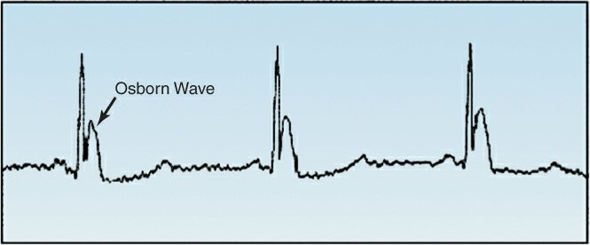
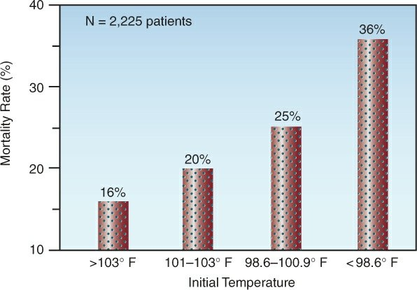

El termostato de pared
Para revisar: aún no está en la app
T central °C · ajuste °C · FC
Escalofrío · Sudor · CK U/L
Ritmo · Sistema nervioso (FC, CK y ritmo: ilustr.)


Para revisar: aún no está en la app
T central °C · ajuste °C · FC
Escalofrío · Sudor · CK U/L
Ritmo · Sistema nervioso (FC, CK y ritmo: ilustr.)

